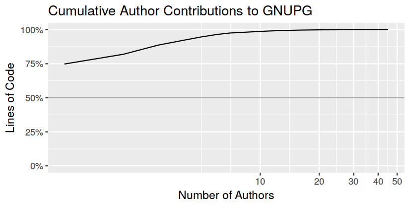

Getting set-up with R
- Install the R interpreter itself: cran.r-project.org or e.g. r-base package in ubuntu
- Install the RStudio IDE: rstudio.com
Robin Gower, Infonomics
The bus factor is the number of developers that would need to be hit by a bus before a project is in serious trouble.
A low bus factor means that knowledge is concentrated in a few vital people.
A high bus factor means that a broad range of individuals know enough to carry on even if others leave.
Find out if the kernel could cope without Torvalds
Compare your work to successful open source projects
Read between the lines - learn about your code base with data analysis
R Studio (AGPLv3) is a popular user interface offering code editor, console, plot viewer, documentation and other tooling for reproducible research
Naive approach: counting lines of code
| Author | Lines of Code |
|---|---|
| Katherine Johnson | 9000 |
| Dorothy Vaughan | 4242 |
| Mary Jackson | 1337 |
| ... | ... |
$ git clone git://git.gnupg.org/gnupg.git
$ git blame --line-porcelain Makefile.am | grep '^author ' | sed -e 's/^author //'
Werner Koch
Werner Koch
Werner Koch
David Shaw
Werner Koch
David Shaw
David Shaw
Werner Koch
...
get_author_for_lines_in_file <- function(repo_path, filename) {
cmd <- paste("cd", repo_path, "; git blame --line-porcelain", filename,
"| grep '^author ' | sed -e 's/^author //'")
system(cmd, intern=T)
}
> get_author_for_lines_in_file("gnupg", "Makefile.am")
[1] "Werner Koch" "Werner Koch" "Werner Koch" "David Shaw" "Werner Koch"
[6] "David Shaw" "David Shaw" "Werner Koch" "David Shaw" "Werner Koch"
[11] "David Shaw" "David Shaw" "David Shaw" "David Shaw" "Werner Koch"
...
> shoes <- c(35,37,37,38,38,38,39,39,39,40,40,40,40,41,41,42,47)
> table(shoes)
shoes
35 37 38 39 40 41 42 47
1 2 3 3 4 2 1 1
> authors <- get_author_for_lines_in_file("gnupg", "Makefile.am")
> table(authors)
authors
David Shaw Justus Winter Marcus Brinkmann NIIBE Yutaka Werner Koch
10 1 2 1 129
> as.data.frame(table(authors), responseName="line_count")
authors line_count
1 David Shaw 10
2 Justus Winter 1
3 Marcus Brinkmann 2
4 NIIBE Yutaka 1
5 Werner Koch 129
count_of_lines_by_author_in_file <- function(repo_path, filename) {
line_authors <- get_author_for_lines_in_file(repo_path, filename)
file_blame <- count_line_authors(line_authors)
file_blame
}
Need to call this function for all the files in the repo and combine the results.
$ git ls-tree HEAD -r | awk -F '\t' '{print $2}'
.gitignore
ABOUT-NLS
AUTHORS
COPYING
COPYING.CC0
...
enumerate_files_in_repo <- function(repo_path) {
cmd <- paste("cd", repo_path, "; git ls-tree HEAD -r | awk -F '\t' '{print $2}'")
system(cmd, intern=T)
}
> enumerate_files_in_repo("gnupg")
[1] ".gitignore"
[2] "ABOUT-NLS"
[3] "AUTHORS"
[4] "COPYING"
[5] "COPYING.CC0"
...

count_of_lines_by_author_in_repo <- function(repo_path) {
repo_tree <- enumerate_files_in_repo(repo_path)
lines_by_file <- adply(repo_tree, 1, count_of_lines_by_author_in_file,
repo_path=repo_path, .progress = "text")
ddply(lines_by_file, .(author), summarise, line_count=sum(line_count))
}
> lba <- count_of_lines_by_author_in_repo("gnupg")
|============== | 25%
> lba <- count_of_lines_by_author_in_repo("gnupg")
|============================ | 50%
> lba <- count_of_lines_by_author_in_repo("gnupg")
|========================================== | 75%
> lba <- count_of_lines_by_author_in_repo("gnupg")
|=============================================================| 100%
> lba <- count_of_lines_by_author_in_repo("gnupg")
|=============================================================| 100%
> lba
author line_count
1 Werner Koch 542336
2 Repo Admin 51894
3 Jonas Borgström 71
4 Justus Winter 48338
5 David Shaw 2482
6 Daniel Kahn Gillmor 25051
7 Jim Meyering 45
8 Marcus Brinkmann 7887
9 NIIBE Yutaka 13004
calculate_author_contribution <- function(author_lines) {
sc <- author_lines[order(author_lines$line_count, decreasing=T),]
sc$cum_line_count <- cumsum(sc$line_count)
sc$cum_author_count <- 1:nrow(sc)
sc$cum_line_percent <- sc$cum_line_count/max(sc$cum_line_count)
sc$cum_author_percent <- sc$cum_author_count/max(sc$cum_author_count)
return(sc)
}
| author | line count | cumulative line count | cumulative author count | cumulative line percent | cumulative author percent |
|---|---|---|---|---|---|
| Werner Koch | 542336 | 542336 | 1 | 0.75 | 0.02 |
| Repo Admin | 51894 | 594230 | 2 | 0.82 | 0.04 |
| Justus Winter | 48338 | 642568 | 3 | 0.89 | 0.07 |
| Daniel Kahn Gillmor | 25051 | 667619 | 4 | 0.92 | 0.09 |
| Neal H. Walfield | 18900 | 686519 | 5 | 0.95 | 0.11 |
| NIIBE Yutaka | 13004 | 699523 | 6 | 0.96 | 0.13 |
| Marcus Brinkmann | 7887 | 707410 | 7 | 0.98 | 0.16 |
| ... | ... | ... | ... | ... | ... |
calculate_bus_factor <- function(ac, critical_threshold=0.5) { critical_contributions <- ac[ac$cum_line_percent < critical_threshold, ] nrow(critical_contributions) }> calculate_bus_factor(gnupg_ac) 0

library(ggplot2)
library(scales)
ggplot(ac, aes(cum_author_count, cum_line_percent))
+ geom_point()
+ geom_line()
+ geom_hline(yintercept=0.5, colour="darkgrey")
+ expand_limits(y=0, x=0)
+ scale_y_continuous("Lines of Code", labels=percent)
+ scale_x_log10("Number of Authors", breaks=c(0,10,20,30,40,50))
+ labs(title="Cumulative Author Contributions to GNUPG")
+ theme_minimal()
+ theme_xkcd()